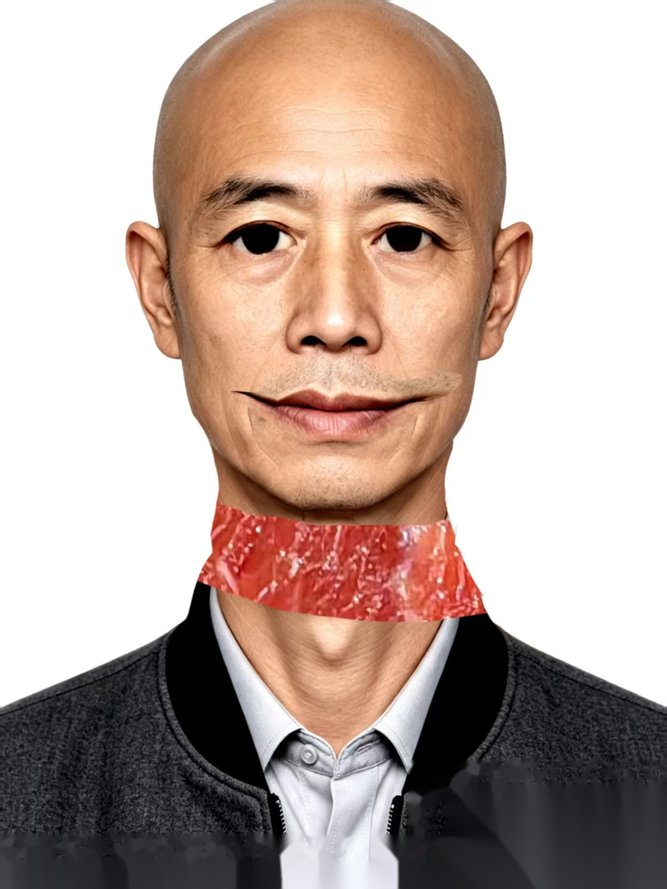

影像加载失败：远程节点无响应
远程影像归档与通信系统（PACS） 连接超时，当前仅能加载文字结构化记录。
若需查看原始影像/扫描件，可尝试重新建立安全链路。
若需查看原始影像/扫描件，可尝试重新建立安全链路。
ERR_CODE: IMG-FETCH-504 | NODE=fj3-arch-pacs-02

病案号：117-726-623 ｜ BL-04 ｜ 神经内科 · 罕见病诊疗组（归档）
入 院 记 录
慢性噬神经性全组织崩解症（虚构）｜中枢型重度认知功能障碍 · 外周型多发组织坏死性溃疡 · ——BO3
一、一般情况
姓名：——BO3性别：————年龄：————民族：————婚姻：————职业：————出生地：酆江市病史陈述者：——已报废入院时间：————记录时间：————
二、主诉
进行性记忆减退 6 个月，全身多发性皮肤溃烂伴组织坏死 2 个月。
三、现病史
患者于 6 个月前（约 2001 年 2 月）无明显诱因出现近事记忆明显减退，常忘记刚刚做过的事、记不住约定，反复询问同一问题，定向力下降，外出后偶有迷路。同时伴性格改变，表现为淡漠、易怒。
近 2 个月（约 2001 年 6 月）出现全身多处皮肤不明原因溃烂，始为散在红色斑丘疹，后迅速演变为深在性溃疡，伴明显恶臭、组织坏死脱落，以双下肢及躯干为著。自觉疼痛不明显，与外观严重程度不符。曾在多家医院按 “湿疹”“皮肤感染” 治疗，效果极差。
近 1 个月记忆力进一步恶化，已无法独立完成日常活动，近期只能认出兄嫂，无法回忆入院路程。否认发热、寒战、头痛呕吐。发病以来精神萎靡，食欲尚可，二便正常，体重下降约 5 kg。
四、既往史
平素体健。否认高血压、糖尿病史。否认肝炎、结核等传染病史。否认手术外伤史。否认输血史。否认药物及食物过敏史。否认疫区接触史。否认烟酒嗜好。
五、个人史、婚育史
生于原籍，无疫水疫区接触史。未婚，无子女。
六、家族史
否认类似疾病史及家族遗传病史。
七、体格检查
T：37.2℃P：88 次/分R：20 次/分BP：128 / 82 mmHg
神志清楚，时间、地点定向力差，计算力下降（100 - 7 连续出错），近事记忆明显减退，情绪焦虑。全身皮肤可见散在分布大小不等溃疡，最大约 8 cm × 10 cm，位于右小腿前侧，深达肌层，边缘不规则，基底可见黄白色坏死组织及脓性分泌物，恶臭明显，周围皮肤暗红。双下肢轻度凹陷性水肿。心肺听诊无异常。腹部平软，无压痛，肝脾肋下未及。浅表淋巴结未触及肿大。
神经系统：瞳孔等大等圆，对光反射灵敏，四肢肌力肌张力正常，病理征阴性，深浅感觉未见明显异常。
八、辅助检查
- 血常规（本院 2001-08-03）：WBC 12.8×10⁹ / L，N 78%，Hb 105 g / L。
- C 反应蛋白（本院 2001-08-03）：CRP 96 mg / L。
- 皮肤溃疡分泌物培养（本院 2001-08-03）：混合菌群生长，未见特殊病原体。
- 皮肤活检（本院 2001-08-03）：表皮及真皮组织广泛坏死，血管周围炎性细胞浸润，可见大量噬神经现象，特殊染色阴性。
- 头颅 MRI（本院 2001-08-03）：双侧海马、颞叶内侧对称性 T2 高信号，伴脑萎缩改变；PET-CT 示局部葡萄糖代谢明显减低。
- 脑脊液检查（本院 2001-08-03）：蛋白轻度升高 0.65 g / L，细胞数正常，14-3-3 蛋白阳性。
九、初步诊断
慢性噬神经性全组织崩解症（虚构）
中枢型 —— 重度认知功能障碍
外周型 —— 多发性组织坏死性溃疡
中枢型 —— 重度认知功能障碍
外周型 —— 多发性组织坏死性溃疡
十、治疗意见
- 收神经内科住院，按罕见病上报备案。
- 绝对卧床，皮肤溃疡请烧伤整形科会诊，加强换药及清创。
- 营养神经、改善循环、抗氧化治疗。
- 补充白蛋白，静脉营养支持。
- 完善全外显子测序及自身免疫性脑炎抗体检测。
- 心理疏导，家属陪护防意外。
- 告知家属病情罕见、预后极差，签署相关知情文件。
书写医师：林峰
审核：酆江市第三医院 神经内科 · 罕见病诊疗组
医师签名：
韩景舟 印
签发时间：2001-08-03 ————